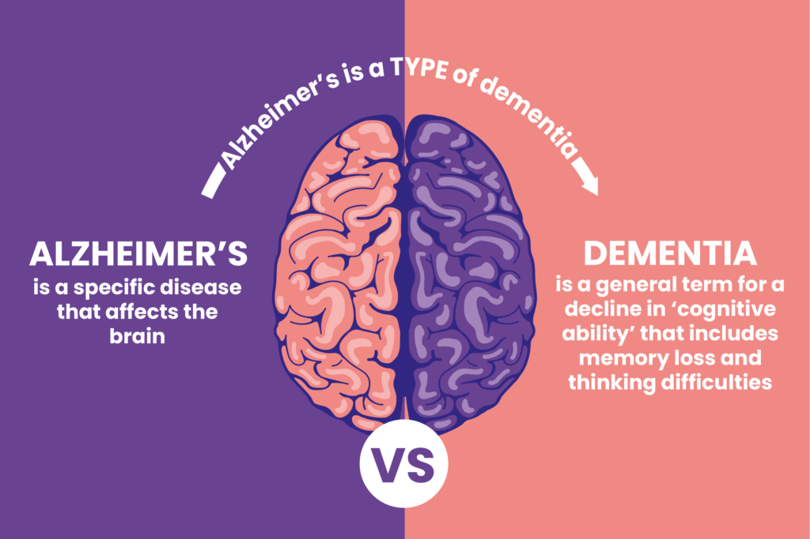

Dementias

SYMPTOMS:
Early symptoms of dementia include :
- Forgetting recent events or information
-
Repeating comments or questions over a very short period of time
-
Misplacing commonly used items or placing them in usual spots
-
Not knowing the date or time
-
Having difficulty coming up with the right words
-
Experiencing a change in mood, behavior or interests
Signs that dementia is getting worse include:
- Ability to remember and make decisions further declines
-
Talking and finding the right words becomes more difficult
-
Daily complex tasks, such as brushing teeth, making a cup of coffee, working a tv remote, cooking, and paying bills become more challenging
-
Rational thinking and behavior and ability to problem solve lessen
-
Sleeping pattern change
-
Anxiety, frustration, confusion, agitation, suspiciousness, sadness and/or depression increase
-
More help with activities of daily living – grooming, toileting, bathing, eating – is needed
-
Hallucinations (seeing people or objects that aren’t there) may develop
CAUSES
Dementia is caused by damage to the brain. There are many causes of dementia. The causes of dementia can be generally grouped as follows:
- Degenerative neurological disorders, such as Alzheimer's disease, frontotemporal lobar dementia, dementia with Lewy bodies, Parkinson's disease dementia and Huntington's disease
-
Vascular disorders, such as multi-infarct dementia, which is caused by multiple strokes in the brain
-
Infections that affect the central nervous system, such as HIV dementia complex and Creutzfeldt-Jakob disease, a quickly worsening and fatal disease that is recognized by its symptoms of dementia and muscle twitching and spasm (myoclonus)
-
Long term drug or alcohol use
-
Depression
-
Certain types of hydrocephalus, a buildup of fluid within the brain that can result from developmental abnormalities, infections, injury, or brain tumors
DIAGNOSIS
Confirming the diagnosis of dementia can be difficult due to the many diseases and conditions that cause it as well as because its symptoms are common to many other illnesses. However, doctors are able to make the diagnosis based on the results of personal medical history, review of current symptoms, neurological (brain) and cognitive (thinking) tests, laboratory tests, imaging tests (CT, MRI, PET scans) and by interacting with the patient.
Current general symptoms that would indicate dementia are, by definition, a decline in such mental functions as memory, thinking, reasoning, personality, mood or behavior that are severe enough to interfere with the ability to accomplish everyday tasks. Patients undergo mental function testing (memory tests, language skills, reasoning and judgment evaluations, problem-solving tasks, other thinking skill tests) to identify problems in these areas. Interviews with family members and/or close friends who may have noticed changes in these areas are helpful as well.
Laboratory tests rule out other diseases and conditions as the cause of dementia, such as thyroid problems and vitamin B12 deficiency. Similarly, brain scans can look for signs of a stroke or tumor that may be the source of the dementia. A PET scan can determine if amyloid proteins are present in the brain, a marker for Alzheimer’s disease.
Oftentimes, neurologists and geriatricians assist in making the diagnosis.